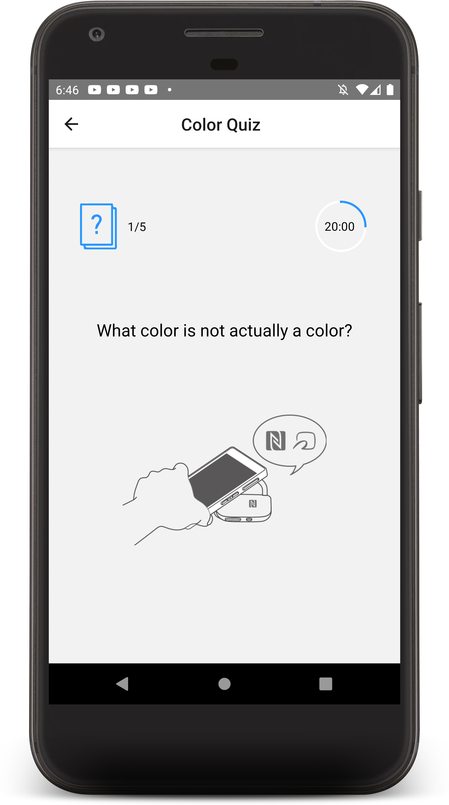
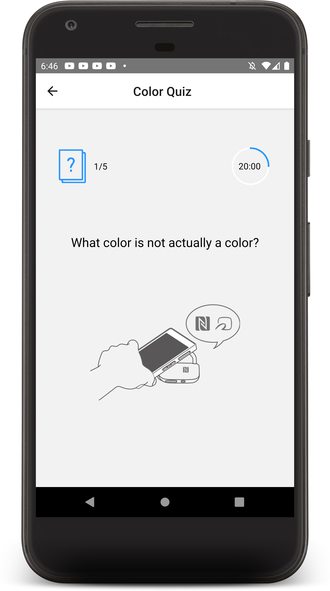
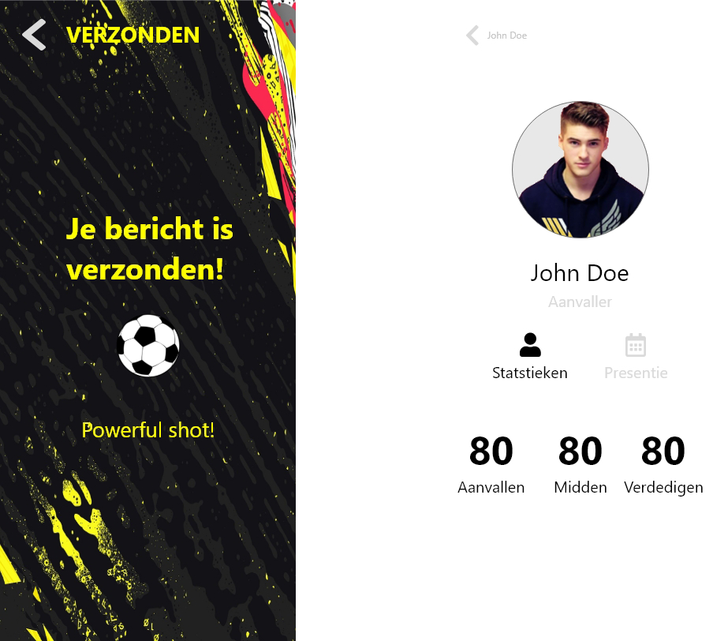
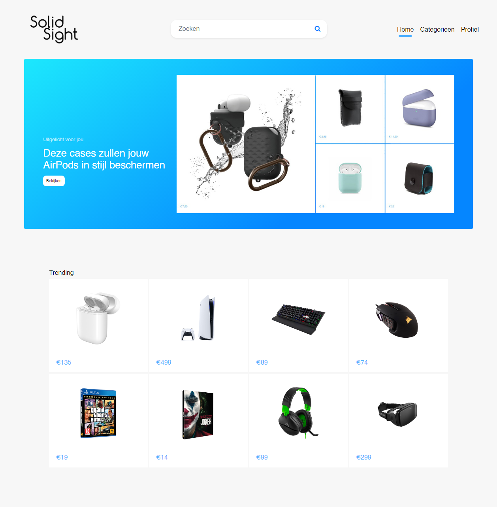
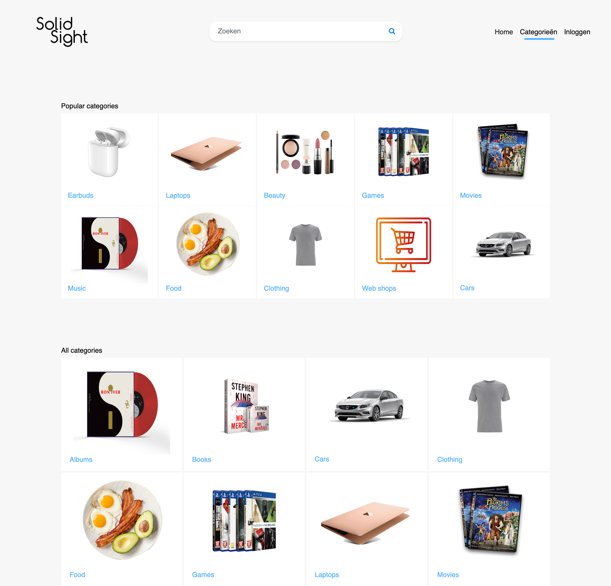
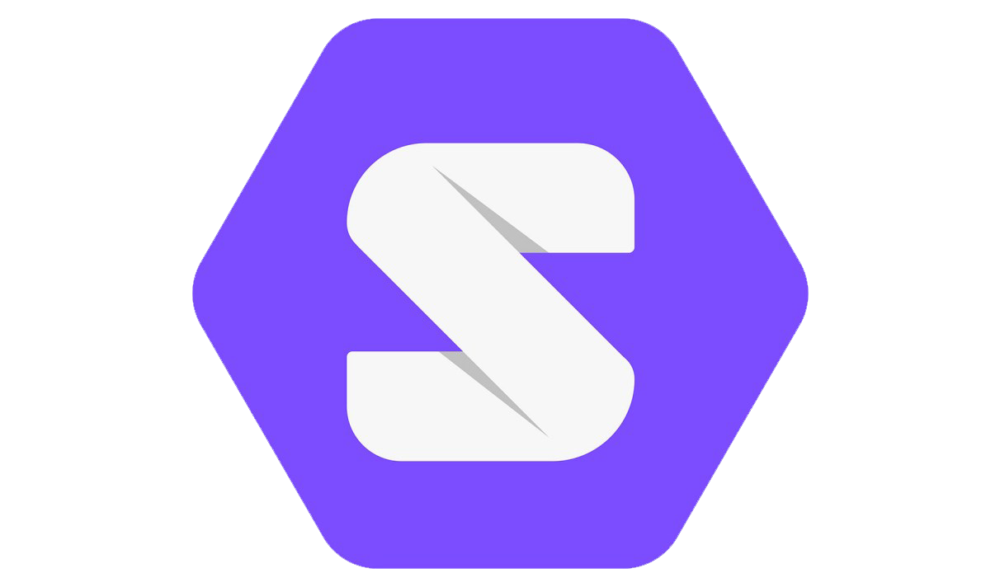

RESOURCES
See items for more info
Products
Smart Mobile - Minor 2021

A lot of people have been infected with the Corona virus and had to go into quarantine. Even more people have been forced to live and work at home while their local gyms closed. This caused people to fail to do their required amount of excercise. Another problem is that tensions within a family can run high when you're constantly at home together. With the QuaQuiz app young families can relieve their stress by running around the house answering questions as quick as possible.

Some screenshots of the app.
 


Technology Behind The App
The app uses React-Native to make the app cross-platform. The react-native NFC library 'react-native-nfc-manager' makes the interaction possible.

View the repo for more information here
Many amateur football coaches still use pen and paper to mark attendance and write down tactics. Some trainers don't even take notes. This medieval method is chaotic, unconvenient and takes too long. There's also trainers who take the training/matches a little too seriously or neglect them. Players often say nothing to the trainer about this, because they do not know any better or are afraid to tell the trainer.
The user chooses to log in as trainer or player


The player can edit their stats, add their club, nationality, position and picture
The trainer has an overview of all players

The player can send a position change and training excercise request to their trainer
The trainer can keep up with the attendance of each player

The player gets a confirmation after sending a request. As a little mini game the player can shoot the ball by shaking their device as fast as they can
The trainer can view the statistics of each player
Technology Behind The App
The app is build for iOS only. It's has been build in the Xcode IDE and coded with Swift. The app uses the built-in accelerometer hardware from the iPhone.
View the repo for more information here

Greenhouse Group has asked me and fellow students to come up with a solution
that will
enable Greenhouse and its clients to keep earning money on advertising
without forcing
users to share their personal data.
Greenhouse predicts the business models of
commerce companies will have to change since users might value their
privacy/data
much more in the future.
A key element of good advertising is showing ads/products that are relevant
to the user.
In other words, personalized advertisements.
SolidSight offers a solution to this problem by showing products to users in
the shape
of personalized review videos.
One of the requirements for this project was to use a JavaScript framework called Solid. This framework is, in a way, a social platform. Solid has it's own GUI and users have their own account/profile where they can post files like photo's and documents. They can also control what personal data they share with applications (such as the SolidSight webapp) that use the Solid framework.
The user chooses to log in (or register) with a Solid account.

Let's assume the user is new to SolidSight. The user will immediately get to choose what they're interested in and what data they want to share.


Now that the user is set up, the user can search for/gets recommended products.
 
The review videos explain what a product can do and why it's a must have.

Technology Behind The App

Solid framework
View the repo for more information here